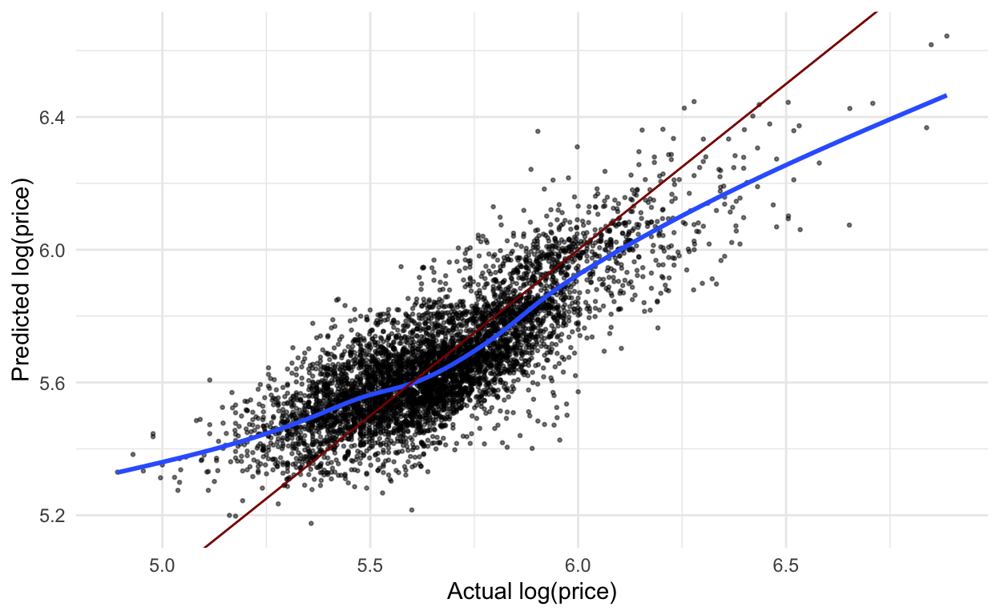
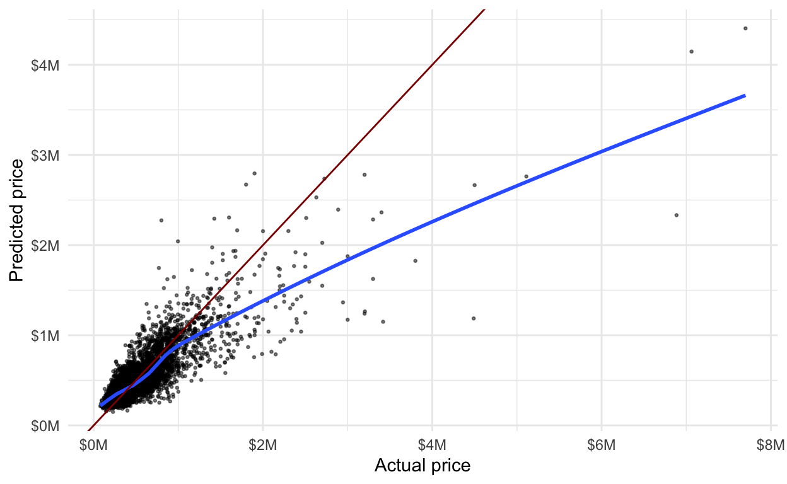

Resources
Here are some great resources. I will reference some of them throughout.
Hands on Machine Learning with R (HOML, for short) by Bradley Boehmke and Brandon Greenwell is the textbook I used in the Machine Learning course I taught in spring of 2020. It is a great place to go to review some of the model algorthims and concepts.
ISLR by James, Witten, Hastie, and Tibshirani goes deeper into the math of the algorithms. You can download their book at this site.
Tidymodels
- Lisas tidymodels noRth presentation gives an example of using
tidymodels. I will go through it below. - tidymodels.org, specifically the case study, walks through examples of using the
tidymodelssuite - Tidy Models with R textbook by Julia Silge and Max Kuhn provides more in-depth explanations of the
tidymodelsfunctions with extended examples. - Julia Silges blog with even more examples!
- Lisas tidymodels noRth presentation gives an example of using
Review
Most of you probably learned about machine learning algorithms using the caret R package. Before jumping into the new tidymodels package, lets remember some of the key machine learning concepts.
Lets start with an overview of the process. You covered many of these in your machine learning course. If you need more of a refresher than what I provide, see the Modeling Process chapter of HOML.

And lets review what we do during each of these steps.
- Quick exploration: Read in the data, check variable types, find which values each variable takes and how often, check distributions of quantitative variables, explore missing values. DO NOT do any modeling or transforming of data in this step.
- Data splitting: Split the data into training and testing sets. The testing dataset will not be used again until the very end.
- Data pre-processing: More in-depth data exploration, feature engineering, variable transformations. This step is usually pretty time-consuming.
- Fitting model(s): Fit the models of interest on the training data.
- Tuning parameters: If the model in the previous step involved tuning parameters, use cross-validation (or similar method) to find the best parameter.
- Evaluate & compare models: Use cross-validation to evaluate the model. If you have a large number of models you are evaluating, you will probably limit the set of models to your best/favorite few during this step. The image below is to help you remember that process, which I have also written about below.
 {width = 60% .external}
{width = 60% .external}
- In \(k\)-fold cross-validation, we divide the data randomly into \(k\) approximately equal groups or folds. The schematic here shows 5-fold cross-validation.
- The model is fit on \(k-1\) of the folds and the remaining fold is used to evaluate the model. Lets look at the first row in the schematic. Here the model is fit on the data that are in folds 2, 3, 4, and 5. The model is evaluated on the data in fold 1.
- RMSE is a common performance metric for models with a quantitative response. It is computed by taking the difference between the predicted and actual response for each observation, squaring it, and taking the square root of the average over all observations. Or, as a formula:
\[ RMSE = \sqrt{\frac{1}{n}\sum_{i=1}^n(y_i - \hat{y}_i)^2}, \]
- So, again looking at the first row in the schematic, the model is fit to folds 2, 3, 4, and 5 and we would use that model to compute the RMSE for fold 1. In the second row, the model is fit to the data in folds 1, 3, 4, and 5 and that model is used to compute the RMSE for the data in the 2nd fold.
- After this is done for all 5 folds, we take the average RMSE, to obtain the overall performance. This overall error is sometimes called the CV error. Averaging the performance over \(k\) folds gives a better estimate of the true error than using one hold-out set. It also allows us to estimate its variability.
- For models with a categorical response, a common performance metric to evaluate a model is accuracy: out of all cases, fraction of correct (true positives and true negatives) classifications. A cross-validated accuracy would be computed in a similar way to the cross-validated RMSE described above.
Apply final few models to testing data: After we limit the number of models to the top few, we will want to to apply it to the testing data, the data that hasnt been used at all during the modeling process. This will give us a measure of the models performance and may help us make a final decision about which model to use.
Use the model!: This step may be simple, like applying the model to a single set of data, or it could be a lot more complex, requiring the model to be put into production so it can be applied to new data in real-time.
Question the data and model: This isnt really a single step but something that we should be doing through the modeling process. We should be working closely with people who know the data well so we assure that we are interpreting and using it correctly. And we should evaluate how the model might be used in new contexts, especially keeping in mind how the model could be used to do harm.
Using tidymodels for the process
In this section, I will show how we can use the tidymodels framework to execute the modeling process. Ive updated the diagram from above to include some of the libraries and functions well use throughout the process.
First, lets load some of the libraries we will use:
library(tidyverse) # for reading in data, graphing, and cleaning
library(tidymodels) # for modeling ... tidily
library(glmnet) # for regularized regression, including LASSO
library(naniar) # for examining missing values (NAs)
library(lubridate) # for date manipulation
library(moderndive) # for King County housing data
library(vip) # for variable importance plots
theme_set(theme_minimal()) # my favorite ggplot2 theme :)
Read in the King County Housing data and take a look at the first 5 rows.
data("house_prices")
house_prices %>%
slice(1:5)
# A tibble: 5 x 21
id date price bedrooms bathrooms sqft_living sqft_lot
<chr> <date> <dbl> <int> <dbl> <int> <int>
1 7129300520 2014-10-13 221900 3 1 1180 5650
2 6414100192 2014-12-09 538000 3 2.25 2570 7242
3 5631500400 2015-02-25 180000 2 1 770 10000
4 2487200875 2014-12-09 604000 4 3 1960 5000
5 1954400510 2015-02-18 510000 3 2 1680 8080
# with 14 more variables: floors <dbl>, waterfront <lgl>,
# view <int>, condition <fct>, grade <fct>, sqft_above <int>,
# sqft_basement <int>, yr_built <int>, yr_renovated <int>,
# zipcode <fct>, lat <dbl>, long <dbl>, sqft_living15 <int>,
# sqft_lot15 <int>Now, we will dig into each of the modeling steps listed above.
1. Quick exploration
Take a quick look at distributions of all the variables to check for anything irregular.
Quantitative variables:
house_prices %>%
select(where(is.numeric)) %>%
pivot_longer(cols = everything(),
names_to = "variable",
values_to = "value") %>%
ggplot(aes(x = value)) +
geom_histogram(bins = 30) +
facet_wrap(vars(variable),
scales = "free")

Things I noticed and pre-processing thoughts:
Right-skewness in
priceand all variables regarding square footage > log transform if using linear regression.Many 0s in
sqft_basement,view, andyr_renovated> create indicator variables of having that feature vs.not, ie. a variable calledbasementwhere a 0 indicates no basement (sqft_basement= 0) and aindicates a basement (sqft_basement` > 0).Age of home may be a better, more interpretable variable than year built >
age_at_sale = year(date) - yr_built.
Categorical variables:
house_prices %>%
select(where(is.factor)) %>%
pivot_longer(cols = everything(),
names_to = "variable",
values_to = "value") %>%
ggplot(aes(x = value)) +
geom_bar() +
facet_wrap(vars(variable),
scales = "free",
nrow = 2)
Things I noticed and pre-processing thoughts:
conditionandgradeboth have levels with low counts > make fewer categories.
zipcodehas many unique levels > dont use that variable for now.
- We might consider using the month the house was sold as a variable:
house_prices %>%
count(month = month(date, label = TRUE)) %>%
ggplot() +
geom_col(aes(x = month, y = n))
- And, we quickly look at the counts for the
waterfrontvariable. Not many houses are waterfront properties.
house_prices %>%
count(waterfront)
# A tibble: 2 x 2
waterfront n
* <lgl> <int>
1 FALSE 21450
2 TRUE 163The only other variable is
idwhich isnt used in modeling.Before moving on, lets use the
add_n_miss()function from thenaniarlibrary to see if we have any missing values. And it appears that there arent any missing values - lucky us!
house_prices %>%
add_n_miss() %>%
count(n_miss_all)
# A tibble: 1 x 2
n_miss_all n
* <int> <int>
1 0 216132. Data splitting
NOTE: I start by doing some manipulating of the dataset to use log_price as the response variable rather than price. I originally did this using a step_log() function after a recipe() function (see the next section), but read in this RStudio Community post, in the comment by Max Kuhn, that its better to transform the outcome before doing the modeling. There is also a discussion of this in the Skipping steps for new data section of the Kuhn & Silge Tidy Modeling with R book.
Then, we split the data into training and testing datasets. We use the training data to fit different types of models and to tune parameters of those models, if needed. The testing dataset is saved for the very end to compare a small subset of models. The initial_split() function from the rsample library (part of tidymodels) is used to create this split. We just do random splitting with this dataset, but there are other arguments that allow you to do stratified sampling. Then we use training() and testing() to extract the two datasets, house_training and house_testing.
set.seed(327) #for reproducibility
house_prices <- house_prices %>%
mutate(log_price = log(price, base = 10)) %>%
select(-price)
# Randomly assigns 75% of the data to training.
house_split <- initial_split(house_prices,
prop = .75)
house_split
<Analysis/Assess/Total>
<16210/5403/21613>#<training/testing/total>
house_training <- training(house_split)
house_testing <- testing(house_split)
3. Data pre-processing
This step may not seem very time consuming in this example, but you will often come back to this step and spend a lot of time trying different variable transformations. You should make sure to work closely with the people who use and create the data during this step. They are a crucial part of the process.
We use the
recipe()function to define the response/outcome variable and the predictor variables.A variety of
step_xxx()functions can be used to do any data pre-processing/transforming. Find them all here. I used a few, with brief descriptions in the code. I also used some selector functions, likeall_predictors()andall_nominal()to help me select the right variables.We also use
update_roles()to change the roles of some variables. For us, these are variables we may want to include for evaluation purposes but will not be used in building the model. I chose the role ofevaluativebut you could name that role anything you want, eg.id,extra,junk(maybe a bad idea?).
house_recipe <- recipe(log_price ~ ., #short-cut, . = all other vars
data = house_training) %>%
# Pre-processing:
# Remove, redundant to sqft_living and sqft_lot
step_rm(sqft_living15, sqft_lot15) %>%
# log sqft variables (without price)
step_log(starts_with("sqft"),
-sqft_basement,
base = 10) %>%
# I originally had the step_log() function below
# but instead did the transformation before
# the recipe because this will mess up the
# predict() function
# step_log(price, base = 10) %>%
# new grade variable combines low grades & high grades
# indicator variables for basement, renovate, and view
# waterfront to numeric
# age of house
step_mutate(grade = as.character(grade),
grade = fct_relevel(
case_when(
grade %in% "1":"6" ~ "below_average",
grade %in% "10":"13" ~ "high",
TRUE ~ grade
),
"below_average","7","8","9","high"),
basement = as.numeric(sqft_basement == 0),
renovated = as.numeric(yr_renovated == 0),
view = as.numeric(view == 0),
waterfront = as.numeric(waterfront),
age_at_sale = year(date) - yr_built)%>%
# Remove sqft_basement, yr_renovated, and yr_built
step_rm(sqft_basement,
yr_renovated,
yr_built) %>%
# Create a month variable
step_date(date,
features = "month") %>%
# Make these evaluative variables, not included in modeling
update_role(all_of(c("id",
"date",
"zipcode",
"lat",
"long")),
new_role = "evaluative") %>%
# Create indicator variables for factors/character/nominal
step_dummy(all_nominal(),
all_predictors(),
-has_role(match = "evaluative"))
Apply to training dataset, just to see what happens. This is not a necessary step, but I often like to check to see that everything is as expected. For example, notice the names of the variables are the same as before but they have been transformed, eg. sqft_living is actually log base 10 of square feet of living. This confused me the first time, so I was glad I ran this extra step. Better to be confused now than later in the process .
house_recipe %>%
prep(house_training) %>%
# using bake(new_data = NULL) gives same result as juice()
# bake(new_data = NULL)
juice()
# A tibble: 16,210 x 36
id date bedrooms bathrooms sqft_living sqft_lot floors
<fct> <date> <int> <dbl> <dbl> <dbl> <dbl>
1 71293005 2014-10-13 3 1 3.07 3.75 1
2 64141001 2014-12-09 3 2.25 3.41 3.86 2
3 56315004 2015-02-25 2 1 2.89 4 1
4 24872008 2014-12-09 4 3 3.29 3.70 1
5 19544005 2015-02-18 3 2 3.23 3.91 1
6 72375503 2014-05-12 4 4.5 3.73 5.01 1
7 13214000 2014-06-27 3 2.25 3.23 3.83 2
8 20080002 2015-01-15 3 1.5 3.03 3.99 1
9 24146001 2015-04-15 3 1 3.25 3.87 1
10 37935001 2015-03-12 3 2.5 3.28 3.82 2
# with 16,200 more rows, and 29 more variables: waterfront <dbl>,
# view <dbl>, sqft_above <dbl>, zipcode <fct>, lat <dbl>,
# long <dbl>, log_price <dbl>, basement <dbl>, renovated <dbl>,
# age_at_sale <dbl>, condition_X2 <dbl>, condition_X3 <dbl>,
# condition_X4 <dbl>, condition_X5 <dbl>, grade_X7 <dbl>,
# grade_X8 <dbl>, grade_X9 <dbl>, grade_high <dbl>,
# date_month_Feb <dbl>, date_month_Mar <dbl>, date_month_Apr <dbl>,
# date_month_May <dbl>, date_month_Jun <dbl>, date_month_Jul <dbl>,
# date_month_Aug <dbl>, date_month_Sep <dbl>, date_month_Oct <dbl>,
# date_month_Nov <dbl>, date_month_Dec <dbl>4. Fitting model(s)
Now that we have split and pre-processed the data, we are ready to model! First, we will model price (which is actually now log(price)) using simple linear regression.
We will do this using some modeling functions from the parsnip package. Find all available functions here. Here is the detail for linear regression.
In order to define our model, we need to do these steps:
- Define the model type, which is the general type of model you want to fit.
- Set the engine, which defines the package/function that will be used to fit the model.
- Set the mode, which is either regression for continuous response variables or classification for binary/categorical response variables. (Note that for linear regression, it can only be regression, so we dont NEED this step in this case.)
- (OPTIONAL) Set arguments to tune. Well see an example of this later.
house_linear_mod <-
# Define a linear regression model
linear_reg() %>%
# Set the engine to "lm" (lm() function is used to fit model)
set_engine("lm") %>%
# Not necessary here, but good to remember for other models
set_mode("regression")
house_linear_mod
Linear Regression Model Specification (regression)
Computational engine: lm This is just setting up the process. We havent fit the model to data yet, and theres still one more step before we do - creating a workflow! This combines the preprocessing and model definition steps.
house_lm_wf <-
# Set up the workflow
workflow() %>%
# Add the recipe
add_recipe(house_recipe) %>%
# Add the modeling
add_model(house_linear_mod)
house_lm_wf
Workflow
Preprocessor: Recipe
Model: linear_reg()
Preprocessor
6 Recipe Steps
step_rm()
step_log()
step_mutate()
step_rm()
step_date()
step_dummy()
Model
Linear Regression Model Specification (regression)
Computational engine: lm Now we are finally ready to fit the model! After all that work, this part seems easy. We first use the fit() function to fit the model, telling it which data set we want to fit the model to. Then we use some other functions to display the results nicely.
house_lm_fit <-
# Tell it the workflow
house_lm_wf %>%
# Fit the model to the training data
fit(house_training)
# Display the results nicely
house_lm_fit %>%
pull_workflow_fit() %>%
tidy() %>%
mutate(across(where(is.numeric), ~round(.x,3)))
# A tibble: 31 x 5
term estimate std.error statistic p.value
<chr> <dbl> <dbl> <dbl> <dbl>
1 (Intercept) 4.01 0.048 83.4 0
2 bedrooms -0.018 0.002 -11.2 0
3 bathrooms 0.036 0.003 14.3 0
4 sqft_living 0.294 0.025 11.7 0
5 sqft_lot -0.038 0.003 -11.0 0
6 floors 0.021 0.003 6.87 0
7 waterfront 0.194 0.013 15.0 0
8 view -0.061 0.004 -15.6 0
9 sqft_above 0.149 0.025 5.99 0
10 basement -0.042 0.005 -9.14 0
# with 21 more rows6. Evaluate & compare models
(I realize we skipped #5. Dont worry, well get to it.)
To evaluate the model, we will use cross-validation (CV), specifically 5-fold CV. First, we set up the five folds of the training data using the vfold_cv() function.
set.seed(1211) # for reproducibility
house_cv <- vfold_cv(house_training, v = 5)
Then, we fit the model using the 5-fold dataset we just created (I am guessing we dont have to do both the previous step of fitting a model on the training data AND this step, but I couldnt figure out how to extract the final model from the CV data so this was my solution for now and it turns out you DO need to do both as noted by Julia Silge in this RStudio Community post).
set.seed(456) # For reproducibility - not needed for this algorithm
house_lm_fit_cv <-
# Tell it the workflow
house_lm_wf %>%
# Fit the model (using the workflow) to the cv data
fit_resamples(house_cv)
# The evaluation metrics for each fold:
house_lm_fit_cv %>%
select(id, .metrics) %>%
unnest(.metrics)
# A tibble: 10 x 5
id .metric .estimator .estimate .config
<chr> <chr> <chr> <dbl> <chr>
1 Fold1 rmse standard 0.135 Preprocessor1_Model1
2 Fold1 rsq standard 0.662 Preprocessor1_Model1
3 Fold2 rmse standard 0.137 Preprocessor1_Model1
4 Fold2 rsq standard 0.644 Preprocessor1_Model1
5 Fold3 rmse standard 0.137 Preprocessor1_Model1
6 Fold3 rsq standard 0.638 Preprocessor1_Model1
7 Fold4 rmse standard 0.133 Preprocessor1_Model1
8 Fold4 rsq standard 0.655 Preprocessor1_Model1
9 Fold5 rmse standard 0.135 Preprocessor1_Model1
10 Fold5 rsq standard 0.642 Preprocessor1_Model1# Evaluation metrics averaged over all folds:
collect_metrics(house_lm_fit_cv)
# A tibble: 2 x 6
.metric .estimator mean n std_err .config
<chr> <chr> <dbl> <int> <dbl> <chr>
1 rmse standard 0.135 5 0.000668 Preprocessor1_Model1
2 rsq standard 0.648 5 0.00437 Preprocessor1_Model1# Just to show you where the averages come from:
house_lm_fit_cv %>%
select(id, .metrics) %>%
unnest(.metrics) %>%
group_by(.metric, .estimator) %>%
summarize(mean = mean(.estimate),
n = n(),
std_err = sd(.estimate)/sqrt(n))
# A tibble: 2 x 5
# Groups: .metric [2]
.metric .estimator mean n std_err
<chr> <chr> <dbl> <int> <dbl>
1 rmse standard 0.135 5 0.000668
2 rsq standard 0.648 5 0.00437 7. Apply model to testing data
In this simple scenario, we may be interested in seeing how the model performs on the testing data that was left out. The code below will fit the model to the training data and apply it to the testing data. There are other ways we could have done this, but the way we do it here will be useful when we start using more complex models where we need to tune model parameters.
After the model is fit and applied, we collect the performance metrics and display them and show the predictions from the testing data.
house_lm_test <-
# The modeling work flow
house_lm_wf %>%
# Use training data to fit the model and apply it to testing data
last_fit(house_split)
# performance metrics from testing data
collect_metrics(house_lm_test)
# A tibble: 2 x 4
.metric .estimator .estimate .config
<chr> <chr> <dbl> <chr>
1 rmse standard 0.135 Preprocessor1_Model1
2 rsq standard 0.655 Preprocessor1_Model1# predictions from testing data
collect_predictions(house_lm_test)
# A tibble: 5,403 x 5
id .pred .row log_price .config
<chr> <dbl> <int> <dbl> <chr>
1 train/test split 5.58 12 5.67 Preprocessor1_Model1
2 train/test split 5.53 17 5.60 Preprocessor1_Model1
3 train/test split 5.90 27 5.97 Preprocessor1_Model1
4 train/test split 5.58 29 5.64 Preprocessor1_Model1
5 train/test split 5.67 31 5.76 Preprocessor1_Model1
6 train/test split 5.88 38 5.81 Preprocessor1_Model1
7 train/test split 5.69 40 5.78 Preprocessor1_Model1
8 train/test split 5.79 41 5.80 Preprocessor1_Model1
9 train/test split 5.77 42 5.89 Preprocessor1_Model1
10 train/test split 5.66 44 5.84 Preprocessor1_Model1
# with 5,393 more rowsThe code below creates a simple plot to examine predicted vs.actual price (log base 10) from the house data.
collect_predictions(house_lm_test) %>%
ggplot(aes(x = log_price,
y = .pred)) +
geom_point(alpha = .5,
size = .5) +
geom_smooth(se = FALSE) +
geom_abline(slope = 1,
intercept = 0,
color = "darkred") +
labs(x = "Actual log(price)",
y = "Predicted log(price)")

Here is the same plot using the regular price scale.
collect_predictions(house_lm_test) %>%
ggplot(aes(x = 10^log_price,
y = 10^.pred)) +
geom_point(alpha = .5,
size = .5) +
geom_smooth(se = FALSE) +
geom_abline(slope = 1,
intercept = 0,
color = "darkred") +
labs(x = "Actual price",
y = "Predicted price") +
scale_x_continuous(labels = scales::dollar_format(scale = .000001,
suffix = "M")) +
scale_y_continuous(labels = scales::dollar_format(scale = .000001,
suffix = "M"))

9. Question the data and model
(Well go back to step #8 in a moment)
When we use create models, it is important to think about how the model will be used and specifically how the model could do harm. One thing to notice in the graphs above is that the price of lower priced homes are, on average, overestimated whereas the price of higher priced homes are, on average, underestimated.
What if this model was used to determine the price of homes for property tax purposes? Then lower priced homes would be overtaxed while higher priced homes would be undertaxed.
There are many different ways we might continue to examine this model (eg. are there differences by zipcode) but for now, well move on.
8. Use the model
How might use this model? One simple way is to predict new values. We saw that we could add the predicted values to the test data using the collect_predictions() function. Below, I predict the value for one new observation using the predict() function. We put the values of each variable in a dataset, in this case a tibble(). We need to have values for all the variables that were originally in the dataset passed to the recipe(), even the evaluation ones that dont get used in the model. We can have extra variables in there, though, like the one I have called garbage. I show a predicted value (for a linear model, type = "numeric") and a confidence interval (type = "conf_int").
NOTE: This is a bit of an aside, but an important one. If I would have used the step_log() function to transform the response variable price in the pre-processing step, rather than transforming it before that, we would see an error message in the predict() below because it would try to run that transformation step, but there wouldnt be a price variable. In real life, it would usually be the case that you dont have a value for the variable you are trying to predict. I originally tried to solve this problem by adding skip = TRUE to the step_log() function, but then the evaluation metrics in collect_metrics() compared the predicted log price to the actual price - yikes! This is discussed in a few places online - heres one. The solution is to transform the response variable before doing any of the modeling steps, as I mentioned in the Data splitting section.
predict(
house_lm_fit,
new_data = tibble(id = "0705700390",
date = ymd("2014-09-03"),
bedrooms = 3,
bathrooms = 2.25,
sqft_living = 2020,
sqft_lot = 8379,
floors = 2,
waterfront = FALSE,
view = 0,
condition = "3",
grade = "7",
sqft_above = 2020,
sqft_basement = 0,
yr_built = 1994,
yr_renovated = 0,
zipcode = "98038",
lat = 47.3828,
long = -122.023,
sqft_living15 = 2020,
sqft_lot15 = 8031,
garbage = "look, it's garbage"),
type = "numeric",
level = 0.95
)
# A tibble: 1 x 1
.pred
<dbl>
1 5.55predict(
house_lm_fit,
new_data = tibble(id = "0705700390",
date = ymd("2014-09-03"),
bedrooms = 3,
bathrooms = 2.25,
sqft_living = 2020,
sqft_lot = 8379,
floors = 2,
waterfront = FALSE,
view = 0,
condition = "3",
grade = "7",
sqft_above = 2020,
sqft_basement = 0,
yr_built = 1994,
yr_renovated = 0,
zipcode = "98038",
lat = 47.3828,
long = -122.023,
sqft_living15 = 2020,
sqft_lot15 = 8031,
garbage = "look, it's garbage"),
type = "conf_int",
level = 0.95
)
# A tibble: 1 x 2
.pred_lower .pred_upper
<dbl> <dbl>
1 5.54 5.56We could also give it an entire dataset. Here, I just take a sample from the original dataset, add an extra variable, and predict with it.
set.seed(327)
fake_new_data <- house_prices %>%
sample_n(20) %>%
mutate(extra_var = 1:20)
predict(house_lm_fit,
fake_new_data)
# A tibble: 20 x 1
.pred
<dbl>
1 5.55
2 5.50
3 5.61
4 5.36
5 5.54
6 5.59
7 5.56
8 5.65
9 5.34
10 6.42
11 5.68
12 5.80
13 5.98
14 5.56
15 5.50
16 5.60
17 5.73
18 5.40
19 5.96
20 5.62Since the predict() function will always return the same number of rows and in the same order as the dataset we put in, we can easily append the prediction to the dataset.
fake_new_data %>%
bind_cols(predict(house_lm_fit,
fake_new_data))
# A tibble: 20 x 23
id date bedrooms bathrooms sqft_living sqft_lot floors
<chr> <date> <int> <dbl> <int> <int> <dbl>
1 72023306 2014-07-21 3 2.5 2020 5613 2
2 66790010 2014-12-18 3 2.5 1660 7388 2
3 76822003 2014-07-28 3 2.25 1960 8875 1
4 61502004 2014-05-13 2 0.75 650 5360 1
5 86455113 2014-12-01 3 1.75 1810 21138 1
6 93210101 2015-03-12 3 1.75 1390 8980 1
7 78532708 2014-08-05 3 2.5 2230 7934 2
8 05100029 2015-04-07 4 1 1640 4200 1.5
9 19016000 2014-06-26 2 1 720 8040 1
10 12250690 2014-05-05 7 8 13540 307752 3
11 11050007 2015-01-23 3 1.5 1570 10824 2
12 36297601 2014-08-21 3 2.5 2490 4904 2
13 75010000 2014-11-21 4 3.5 3020 12750 2
14 86455400 2014-07-25 3 2 1790 8228 1
15 21720002 2015-03-23 2 1 1150 11250 1
16 79670002 2014-11-21 3 2.5 1930 4000 2
17 40778002 2014-06-10 3 1.5 2010 9480 1
18 04250000 2014-10-21 2 1 1150 5695 1
19 95418001 2014-10-10 5 2.5 3490 18850 1
20 43182004 2014-05-22 3 2.25 1470 1578 2
# with 16 more variables: waterfront <lgl>, view <int>,
# condition <fct>, grade <fct>, sqft_above <int>,
# sqft_basement <int>, yr_built <int>, yr_renovated <int>,
# zipcode <fct>, lat <dbl>, long <dbl>, sqft_living15 <int>,
# sqft_lot15 <int>, log_price <dbl>, extra_var <int>, .pred <dbl>We could also add a confidence interval and use the relocate() function to move around some variables.
fake_new_data %>%
bind_cols(predict(house_lm_fit,
fake_new_data)) %>%
bind_cols(predict(house_lm_fit,
fake_new_data,
type = "conf_int")) %>%
relocate(log_price, starts_with(".pred"),
.after = id)
# A tibble: 20 x 25
id log_price .pred .pred_lower .pred_upper date bedrooms
<chr> <dbl> <dbl> <dbl> <dbl> <date> <int>
1 720233 5.72 5.55 5.54 5.56 2014-07-21 3
2 667900 5.45 5.50 5.49 5.51 2014-12-18 3
3 768220 5.26 5.61 5.61 5.62 2014-07-28 3
4 615020 5.36 5.36 5.35 5.37 2014-05-13 2
5 864551 5.48 5.54 5.53 5.55 2014-12-01 3
6 932101 5.44 5.59 5.58 5.60 2015-03-12 3
7 785327 5.65 5.56 5.55 5.57 2014-08-05 3
8 051000 5.92 5.65 5.64 5.66 2015-04-07 4
9 190160 5.32 5.34 5.33 5.35 2014-06-26 2
10 122506 6.36 6.42 6.40 6.44 2014-05-05 7
11 110500 5.36 5.68 5.67 5.69 2015-01-23 3
12 362976 5.80 5.80 5.79 5.81 2014-08-21 3
13 750100 5.93 5.98 5.97 5.99 2014-11-21 4
14 864554 5.50 5.56 5.56 5.57 2014-07-25 3
15 217200 5.41 5.50 5.49 5.51 2015-03-23 2
16 796700 5.54 5.60 5.59 5.61 2014-11-21 3
17 407780 5.63 5.73 5.72 5.74 2014-06-10 3
18 042500 5.26 5.40 5.39 5.41 2014-10-21 2
19 954180 5.96 5.96 5.95 5.97 2014-10-10 5
20 431820 5.64 5.62 5.61 5.63 2014-05-22 3
# with 18 more variables: bathrooms <dbl>, sqft_living <int>,
# sqft_lot <int>, floors <dbl>, waterfront <lgl>, view <int>,
# condition <fct>, grade <fct>, sqft_above <int>,
# sqft_basement <int>, yr_built <int>, yr_renovated <int>,
# zipcode <fct>, lat <dbl>, long <dbl>, sqft_living15 <int>,
# sqft_lot15 <int>, extra_var <int>What if we dont want to use the model in this R session? That would be quite a common occurrence. After building a model, we would often want to save the model and use it at a later time to apply to new data. Well get into some more complex ways of doing this eventually, but for now, lets do the following:
- Save the model using
saveRDS(). This model is saved to the current project folder (assuming youre using a project right now), but you could save it anywhere youd like.
saveRDS(house_lm_fit, "house_lm_fit.rds")
- Read the model back in using
readRDS(). Go look athouse_lm_readin the environment, and youll see that, indeed, it is the workflow we saved!
house_lm_read <- readRDS("house_lm_fit.rds")
- Use the model we read back in to predict new data. Just like we did before, we can use the
predict()function to predict new values. I use the samefake_new_dataI used before.
fake_new_data %>%
bind_cols(predict(house_lm_read,
fake_new_data)) %>%
bind_cols(predict(house_lm_read,
fake_new_data,
type = "conf_int")) %>%
relocate(log_price, starts_with(".pred"),
.after = id)
# A tibble: 20 x 25
id log_price .pred .pred_lower .pred_upper date bedrooms
<chr> <dbl> <dbl> <dbl> <dbl> <date> <int>
1 720233 5.72 5.55 5.54 5.56 2014-07-21 3
2 667900 5.45 5.50 5.49 5.51 2014-12-18 3
3 768220 5.26 5.61 5.61 5.62 2014-07-28 3
4 615020 5.36 5.36 5.35 5.37 2014-05-13 2
5 864551 5.48 5.54 5.53 5.55 2014-12-01 3
6 932101 5.44 5.59 5.58 5.60 2015-03-12 3
7 785327 5.65 5.56 5.55 5.57 2014-08-05 3
8 051000 5.92 5.65 5.64 5.66 2015-04-07 4
9 190160 5.32 5.34 5.33 5.35 2014-06-26 2
10 122506 6.36 6.42 6.40 6.44 2014-05-05 7
11 110500 5.36 5.68 5.67 5.69 2015-01-23 3
12 362976 5.80 5.80 5.79 5.81 2014-08-21 3
13 750100 5.93 5.98 5.97 5.99 2014-11-21 4
14 864554 5.50 5.56 5.56 5.57 2014-07-25 3
15 217200 5.41 5.50 5.49 5.51 2015-03-23 2
16 796700 5.54 5.60 5.59 5.61 2014-11-21 3
17 407780 5.63 5.73 5.72 5.74 2014-06-10 3
18 042500 5.26 5.40 5.39 5.41 2014-10-21 2
19 954180 5.96 5.96 5.95 5.97 2014-10-10 5
20 431820 5.64 5.62 5.61 5.63 2014-05-22 3
# with 18 more variables: bathrooms <dbl>, sqft_living <int>,
# sqft_lot <int>, floors <dbl>, waterfront <lgl>, view <int>,
# condition <fct>, grade <fct>, sqft_above <int>,
# sqft_basement <int>, yr_built <int>, yr_renovated <int>,
# zipcode <fct>, lat <dbl>, long <dbl>, sqft_living15 <int>,
# sqft_lot15 <int>, extra_var <int>5. Tuning model parameters
With the first model, there werent any parameters to tune. Lets go back to step #5 and look at how the workflow changes when we have to do this extra step.
Now we are going to try using Least Absolute Shrinkage and Selection Operator (LASSO) regression. This method shrinks some coefficients to 0 based on a penalty term. We will use cross-validation to help us find the best penalty term.
We will set up the model similar to how we set up the linear model, but add a set_args() function. The tune() argument to the penalty term is a placeholder. We are telling it that we are going to tune the penalty parameter later.
house_lasso_mod <-
# Define a lasso model
# I believe default is mixture = 1 so probably don't need
linear_reg(mixture = 1) %>%
# Set the engine to "glmnet"
set_engine("glmnet") %>%
# The parameters we will tune.
set_args(penalty = tune()) %>%
# Use "regression"
set_mode("regression")
To see the arguments available for tuning, go to the Explore Model Arguments section of the parsnip documentation and search the model type and engine you are interested in. Below I printed the arguments we can tune for linear_reg using glmnet (LASSO). We could have also tuned the mixture parameter, but I set it to 1 to explicitly use LASSO.

And then we create a LASSO workflow. Notice that were using the same recipe step that we used in the regular linear model.
house_lasso_wf <-
# Set up the workflow
workflow() %>%
# Add the recipe
add_recipe(house_recipe) %>%
# Add the modeling
add_model(house_lasso_mod)
house_lasso_wf
Workflow
Preprocessor: Recipe
Model: linear_reg()
Preprocessor
6 Recipe Steps
step_rm()
step_log()
step_mutate()
step_rm()
step_date()
step_dummy()
Model
Linear Regression Model Specification (regression)
Main Arguments:
penalty = tune()
mixture = 1
Computational engine: glmnet Heres where some of the new steps come in. We use the grid_regular() function from the dials library to choose some values of the penalty parameter for us. Alternatively, we could give it a vector of values we want to try.
penalty_grid <- grid_regular(penalty(),
levels = 20)
penalty_grid
# A tibble: 20 x 1
penalty
<dbl>
1 1.00e-10
2 3.36e-10
3 1.13e- 9
4 3.79e- 9
5 1.27e- 8
6 4.28e- 8
7 1.44e- 7
8 4.83e- 7
9 1.62e- 6
10 5.46e- 6
11 1.83e- 5
12 6.16e- 5
13 2.07e- 4
14 6.95e- 4
15 2.34e- 3
16 7.85e- 3
17 2.64e- 2
18 8.86e- 2
19 2.98e- 1
20 1.00e+ 0Then, use the tune_grid() function to fit the model using cross-validation for all penalty_grid values and evaluate on all the folds.
house_lasso_tune <-
house_lasso_wf %>%
tune_grid(
resamples = house_cv,
grid = penalty_grid
)
house_lasso_tune
# Tuning results
# 5-fold cross-validation
# A tibble: 5 x 4
splits id .metrics .notes
<list> <chr> <list> <list>
1 <split [12968/3242]> Fold1 <tibble [40 5]> <tibble [2 1]>
2 <split [12968/3242]> Fold2 <tibble [40 5]> <tibble [2 1]>
3 <split [12968/3242]> Fold3 <tibble [40 5]> <tibble [2 1]>
4 <split [12968/3242]> Fold4 <tibble [40 5]> <tibble [2 1]>
5 <split [12968/3242]> Fold5 <tibble [40 5]> <tibble [2 1]>Then look at the cross-validated results in a table.
# The rmse for each fold:
house_lasso_tune %>%
select(id, .metrics) %>%
unnest(.metrics) %>%
filter(.metric == "rmse")
# A tibble: 100 x 6
id penalty .metric .estimator .estimate .config
<chr> <dbl> <chr> <chr> <dbl> <chr>
1 Fold1 1.00e-10 rmse standard 0.135 Preprocessor1_Model01
2 Fold1 3.36e-10 rmse standard 0.135 Preprocessor1_Model02
3 Fold1 1.13e- 9 rmse standard 0.135 Preprocessor1_Model03
4 Fold1 3.79e- 9 rmse standard 0.135 Preprocessor1_Model04
5 Fold1 1.27e- 8 rmse standard 0.135 Preprocessor1_Model05
6 Fold1 4.28e- 8 rmse standard 0.135 Preprocessor1_Model06
7 Fold1 1.44e- 7 rmse standard 0.135 Preprocessor1_Model07
8 Fold1 4.83e- 7 rmse standard 0.135 Preprocessor1_Model08
9 Fold1 1.62e- 6 rmse standard 0.135 Preprocessor1_Model09
10 Fold1 5.46e- 6 rmse standard 0.135 Preprocessor1_Model10
# with 90 more rows# rmse averaged over all folds:
house_lasso_tune %>%
collect_metrics() %>%
filter(.metric == "rmse")
# A tibble: 20 x 7
penalty .metric .estimator mean n std_err .config
<dbl> <chr> <chr> <dbl> <int> <dbl> <chr>
1 1.00e-10 rmse standard 0.135 5 0.000644 Preprocessor1_Mod
2 3.36e-10 rmse standard 0.135 5 0.000644 Preprocessor1_Mod
3 1.13e- 9 rmse standard 0.135 5 0.000644 Preprocessor1_Mod
4 3.79e- 9 rmse standard 0.135 5 0.000644 Preprocessor1_Mod
5 1.27e- 8 rmse standard 0.135 5 0.000644 Preprocessor1_Mod
6 4.28e- 8 rmse standard 0.135 5 0.000644 Preprocessor1_Mod
7 1.44e- 7 rmse standard 0.135 5 0.000644 Preprocessor1_Mod
8 4.83e- 7 rmse standard 0.135 5 0.000644 Preprocessor1_Mod
9 1.62e- 6 rmse standard 0.135 5 0.000644 Preprocessor1_Mod
10 5.46e- 6 rmse standard 0.135 5 0.000644 Preprocessor1_Mod
11 1.83e- 5 rmse standard 0.135 5 0.000644 Preprocessor1_Mod
12 6.16e- 5 rmse standard 0.135 5 0.000640 Preprocessor1_Mod
13 2.07e- 4 rmse standard 0.135 5 0.000623 Preprocessor1_Mod
14 6.95e- 4 rmse standard 0.135 5 0.000591 Preprocessor1_Mod
15 2.34e- 3 rmse standard 0.136 5 0.000522 Preprocessor1_Mod
16 7.85e- 3 rmse standard 0.142 5 0.000513 Preprocessor1_Mod
17 2.64e- 2 rmse standard 0.161 5 0.000515 Preprocessor1_Mod
18 8.86e- 2 rmse standard 0.191 5 0.000896 Preprocessor1_Mod
19 2.98e- 1 rmse standard 0.228 5 0.000960 Preprocessor1_Mod
20 1.00e+ 0 rmse standard 0.228 5 0.000960 Preprocessor1_ModAnd, even better, we can visualize the results. We can see that the RMSE stays fairly consistently low until just before \(10^{-3}\)
# Visualize rmse vs. penalty
house_lasso_tune %>%
collect_metrics() %>%
filter(.metric == "rmse") %>%
ggplot(aes(x = penalty, y = mean)) +
geom_point() +
geom_line() +
scale_x_log10(
breaks = scales::trans_breaks("log10", function(x) 10^x),
labels = scales::trans_format("log10",scales::math_format(10^.x))) +
labs(x = "penalty", y = "rmse")
We choose the best penalty parameter as the one with the smallest cross-validated RMSE. The select_best() function does this.
house_lasso_tune %>%
show_best(metric = "rmse")
# A tibble: 5 x 7
penalty .metric .estimator mean n std_err .config
<dbl> <chr> <chr> <dbl> <int> <dbl> <chr>
1 2.07e- 4 rmse standard 0.135 5 0.000623 Preprocessor1_Mode
2 6.16e- 5 rmse standard 0.135 5 0.000640 Preprocessor1_Mode
3 1.00e-10 rmse standard 0.135 5 0.000644 Preprocessor1_Mode
4 3.36e-10 rmse standard 0.135 5 0.000644 Preprocessor1_Mode
5 1.13e- 9 rmse standard 0.135 5 0.000644 Preprocessor1_Mode# Best tuning parameter by smallest rmse
best_param <- house_lasso_tune %>%
select_best(metric = "rmse")
best_param
# A tibble: 1 x 2
penalty .config
<dbl> <chr>
1 0.000207 Preprocessor1_Model13There are other ways you can select parameters, like select_by_one_std_err() which selects the most simple model that is within one standard error of the numerically optimal results. To use this, we need at least one more argument: the parameter to sort the model from most simple to most complex. So, if using glmnets penalty parameter, since a bigger penalty will be a simpler model, I should put desc(penalty) in as the argument.
# Best tuning parameter by smallest rmse
one_se_param <- house_lasso_tune %>%
select_by_one_std_err(metric = "rmse", desc(penalty))
one_se_param
# A tibble: 1 x 9
penalty .metric .estimator mean n std_err .config .best .bound
<dbl> <chr> <chr> <dbl> <int> <dbl> <chr> <dbl> <dbl>
1 0.000695 rmse standard 0.135 5 5.91e-4 Prepro 0.135 0.136Because a larger penalty parameter will fit a simpler model (more terms will likely go to zero). Ill go with the one_se_param, especially since the RMSE is so close to the best models RMSE.
Once we choose the parameter we want, we adjust the workflow to include the best tuning parameter using the finalize_workflow() function.
house_lasso_final_wf <- house_lasso_wf %>%
finalize_workflow(one_se_param)
house_lasso_final_wf
Workflow
Preprocessor: Recipe
Model: linear_reg()
Preprocessor
6 Recipe Steps
step_rm()
step_log()
step_mutate()
step_rm()
step_date()
step_dummy()
Model
Linear Regression Model Specification (regression)
Main Arguments:
penalty = 0.00069519279617756
mixture = 1
Computational engine: glmnet Now we could fit this to the training data and look at the resulting model. We can see a few of the terms have coefficients of 0 (although not as many as I would have expected).
house_lasso_final_mod <- house_lasso_final_wf %>%
fit(data = house_training)
house_lasso_final_mod %>%
pull_workflow_fit() %>%
tidy()
# A tibble: 31 x 3
term estimate penalty
<chr> <dbl> <dbl>
1 (Intercept) 4.12 0.000695
2 bedrooms -0.0160 0.000695
3 bathrooms 0.0348 0.000695
4 sqft_living 0.326 0.000695
5 sqft_lot -0.0366 0.000695
6 floors 0.0209 0.000695
7 waterfront 0.186 0.000695
8 view -0.0617 0.000695
9 sqft_above 0.124 0.000695
10 basement -0.0379 0.000695
# with 21 more rowsWe can also visualize variable importance.
# Visualize variable importance
house_lasso_final_mod %>%
pull_workflow_fit() %>%
vip()

Lastly, we apply the model to the test data and examine some final metrics. We also show the metrics from the regular linear model. It looks like performance for the LASSO model is ever so slightly better, but just barely. Its also a good sign that these RMSEs are similar to the cross-validated RMSEs.
# Fit model with best tuning parameter(s) to training data and apply to test data
house_lasso_test <- house_lasso_final_wf %>%
last_fit(house_split)
# Metrics for model applied to test data
house_lasso_test %>%
collect_metrics()
# A tibble: 2 x 4
.metric .estimator .estimate .config
<chr> <chr> <dbl> <chr>
1 rmse standard 0.135 Preprocessor1_Model1
2 rsq standard 0.655 Preprocessor1_Model1# Compare to regular linear regression results
collect_metrics(house_lm_test)
# A tibble: 2 x 4
.metric .estimator .estimate .config
<chr> <chr> <dbl> <chr>
1 rmse standard 0.135 Preprocessor1_Model1
2 rsq standard 0.655 Preprocessor1_Model1